And

International Bible Students Association Brooklyn, NY, USA-
TO THE “PARENTS IN THE LORD” WHO STRIVE TO FULFILL THEIR OBLIGATIONS TO THEIR CHILDREN RESPECTING THE HIGHER THINGS OF LIFE, GOD'S WORD, GOD'S WILL, AND GOD’S PURPOSES, THIS LITTLE WORK IS HEARTILY DEDICATED
COPYBIGHT 1920 International Bible Students Association BROOKLYN, NEW YOBK
Dear little reader or listener: Come with me and let us learn some precious lessons out of God’s Word.
A Here we see Adam and Eve, the first man and woman, made perfect and good and given a beautiful home, where they lived for about two years; then, because they disobeyed God they lost their home and were not allowed to enter Eden any more. But God has promised that all the world shall be beautiful and peaceful like the Garden of Eden; then we shall have the privilege of showing God how much we love him, by doing his will.
And here we see the Bible chained to a reading desk, Bibles were very scarce in those days, and there was not much Bible study, but now we can all have one each. Let us read it every day and learn of the glorious time coming when “the earth shall be filled with the knowledge of the glory of the Lord as the waters cover the sea", and people will have on the bells of their horses, "Holiness unto the Lord!"—Haba kuk 2:14; Zechariah 14:20.
Genesis 3 :17, 24
is for Adam,
Not heeding the Lord, Was kept from his home by A bright flaming sword.
Ephesians 3 :11, Diaglott
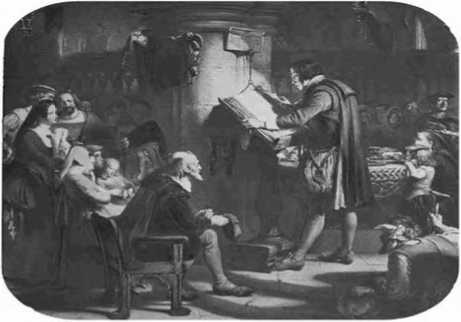Now
is for Bible,
That most precious Book: We find God’s great plan there, If only we look.
Cain was Adam and Eve’s first son, and Abel was the second. Here we see the parents heartbroken; for Cain, who was born after they were turned out of Eden, when he grew up to be a young man, killed his own brother Abel because he was jealous of him. God accepted Abel’s sacrifice, for it was a slain lamb (pointing forward to Jesus), but Cain offered the fruits of the land, showing that he tried to please God by his own works; and the fire from heaven did not burn his sacrifice. Let us not think that of ourselves we can please God, but only through Jesus Christ.
T> And look at Daniel! What a brave man he was! And oh, what faith he had in God! Just imagine: he would rather trust God and go into the lions’ den than not talk with him in prayer. How we admire him! Let us never forget to ask God’s help to begin the day and his forgiveness at the end, together with our praise and thanks, and let us also remember to be always Christlike, though we may be laughed at. “Dare to be a Daniel."
Genesis 4 :8
This is for Cain,
Who killed his own brother; y Bringing sorrow and grief To Eve, his kind mother.
Daniel G :10-24
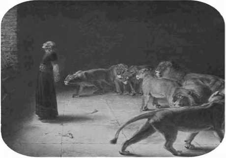And
is for Daniel: Because he would pray, Was shut in with the lions, But let out next day.
"O’ Here is another fearless man, who told King Ahab of all the wrong he had done. But God took care of Elijah; for when he had to run away for his life and hide in a cave, God sent ravens to bring him food. And so it is with us: if we are fearless in telling the truth for Jesus, and of Jesus, God will always take care of us, no matter how poor or unknown we may be; and in this glorious Golden Age we shall have a grand reward.
■C Felix was a governor of Judea, before whom St. Paul gave a stirring address. On account of having a Jewish wife he understood Paul, whose words made Felix fear for his own future in the thousand-year day of judgment, which will soon be here. Paul had not done anything wrong, but Felix would not let him go, hoping that Paul would pay him some money for his release. Felix sent often for him from prison; but Paul did not give him money.
1 Kings 16 :29-33 ;
17 :1 ; IS : 17-21
An
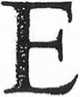for Elijah,
That prophet of old: God's very great wrath To Ahab he told.
Acts 24 :24-27
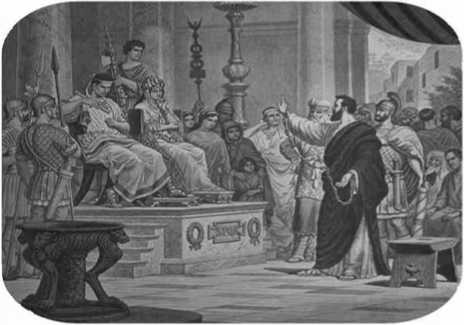But

is for Felix—
His wife sitting near— He heard Paul preach Jesus, And trembled with fear.
GHere we see Goliath, the giant of the Philistines, who, every morning and evening, for forty days, challenged the Israelites, Saul, Israel’s king, was head and shoulders taller than any one of them, and the Philistines hoped that Saul would come out against Goliath, and that thus they would kill him and take the Israelites prisoners. But every man in that army was afraid. David, a boy, who visited the army to bring good things to his brothers, and who, before this, had killed a lion and a bear while shepherding his father's sheep had such faith in God that he asked King Saul if he might fight against Goliath. On being permitted, he took his sling and five smooth stones out of the deep brook in the valley, and, throwing one, he stunned the giant Goliath, and then cut off his head with the giant’s sword. Surely, we can . learn a great lesson from this: with God's help, everything that is good is possible. Let us rely upon God as David did.
J-T And here is a picture of hell: not the awful place that we once used to think of, and as explained by Dante the poet, but the hell of the Bible, which is the grave. And oh! the glorious time ahead of us, when all things are ready; then we shall pray to the Lord for the return of dear mother, father, sister, or brother, and Jesus’ voice will call them out of this death condition. Shall we not rejoice and clap our hands?
1 Samuel 17 :l-10, 45-51
Gstands for Goliath, A giant who filled All Israel with fear, And by David was killed.
John 5 :25-29
Psalm 16:10
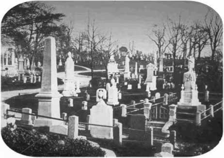And
His for Hell, Death, sheol, the grave; Out of which Jesus’ voice Will call men, to save.
T Esau and Jacob, Isaac's two sons, were twins, A though Esau was a little older and therefore heir to that wonderful promise that God made to Abraham. But, having no faith in it, Esau had sold it to Jacob for a "mess of pottage”, that is, something good to eat.’ Now, nearing the death of his father Isaac, it was only fair that. Jacob should have what Esau had sold to him—the blessing. So Jacob took Esau’s place and received it. He was not wishing to gain lands or oxen, because he left all and went to work for his Uncle Laban, but he was happy because he carried with him this blessing of God, which had said: Through thee and thy seed "shall all the families of the earth be blessed". (Genesis 28:14) Let us seek God’s favor and blessing as the most precious thing in life.
J Ah! everybody loves babies, and here is Jesus when he was a baby, just in a wooden trough where the oxen had fed, because all the houses and hotels were so full they could find no other place. Think of the Son of God being laid in a manger! Do we not see how different God is from rich, and proud human beings? Jesus was just a poor boy, and yet what a lovely and lovable one. The Bible says: “Jesus increased in wisdom and age [margin], and in favor with God and man”. (Luke 252) Let us learn well this great lesson of humility, always being glad to help the poor and needy, remembering that we ourselves are but dust.— Genesis 3:19.
Genesis 27 :27-29 ;
28 :3, 4
An "T stands for Isaac, Giving Jacob his blessing— Can you tell of that promise Without even once guessing?
Matthew 2 :1, 2
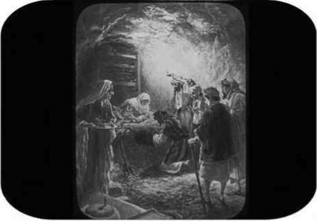is for Jesus,
Our dear, loving Lord, Who was bom in a manger And by shepherds adored.
TZ- Here is a man, who, with many more, together with their wives and children, was killed by an earthquake. They rebelled against Moses and Aaron, and so, to teach all the Israelites a lesson, God caused the earth to open, and they fell in. Let us always remember that God’s ways are best, even though we may not see how they can work out. When Messiah's kingdom is set up, let us be sure that we do as the Lord wishes. Then we shall gain life and happiness.
T It is almost hard to realize that Satan, the wicked adversary, the devil, was once a beautiful angel, but it is true; and God gave him the care of Adam and Eve in the Garden of Eden. (Ezekiel 28:13-15) However, because he wanted more power and rulership, he was not true to that trust. He told Eve the greatest lie that ever was told; for though Adam heard God say that if he ate of one special tree, he would surely die, Satan said to Eve: “Ye shall not surely die”. (Genesis 3:4) Jesus tells us that Satan was a liar and a murderer from the beginning. (John 8:44) Does this not also teach us a great lesson? Whatever God says in his Word, let us believe, whether it be “The dead know not anything" (Ecclesiastes 9:5), or, “There shall be a resurrection of the dead, both of the just and unjust”.—Acts 24:15.
Numbers 16:1-3, 27-33, Letter
And
is for Korah;
With a company of men Displeased God so much that The earth swallowed them.
Isaiah 14 :12-14, Lceser
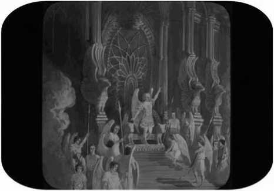While
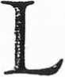is for Lucifer, Bright Morning Star; The devil’s first name E’er he fell from afar.
Here is another baby! It is said Moses was such a beautiful child that passersby would turn to look at him. His father, who was a basket-maker, made a basket with a lid, and covered it inside and out with pitch, so that water could not get in, then his mother put the dear little baby inside and hid the basket away in the bulrushes which grew in the water, leaving Miriam, his sister (a girl about nine years old), to watch. Soon after, Pharaoh's daughter came down to bathe. She heard Moses crying, her maids brought out the basket in which the dear little baby lay, and though the princess knew that he was a Hebrew, and that her father (Pharaoh) had ordered all the Hebrew boys to be killed, she took him and had him brought up as her own son. Does this not show us that God can take care of us at all times in all places? Let us be meek and humble and trust him fully.
AJ We have so often heard of Noah! Here we see ” the ark floating on the water which, as it rises, drowns those who would not believe the Lord’s words through Noah; for, though he was one hundred twenty years building the ark and all that time telling them there would be a flood, never having seen rain (Genesis 2:5, 6), they laughed at him. However, Noah believed God and was saved. We are now in the time of trouble, of which this is a picture. Let us go to Jesus for refuge, and he will indeed be our Ark of safety to bring us out into the Golden Age.
This
Exodus 2 :3 G
is for Moses
Hid away on the water, But found shortly after By Phar’oh's kind daughter.
Genesis 6 :13,14, 17,18 ; 7 :5-7, 21-23
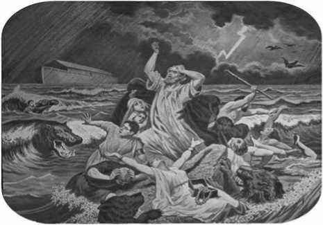But
is for Noah,
Who built the great ark, And by faith saved his all Through the storm and the dark.
And here are Adam and Eve again. While it is true that Eve tempted Adam to eat of the forbidden fruit, yet God’s Word tells us that Adam sinned wilfully (1 Timothy 2:14): “Adam was not deceived". He made love, instead of his great Creator, his God, and he disobeyed God rather than lose his wife. Let us see to it that everything we do is right and good: “To obey is better than sacrifice". (1 Samuel 15:22) Let us say, when we are tempted to do wrong: No, I cannot do that; it is wrong. “Children, obey your parents in all things: for this is well pleasing unto the Lord.”—Colossians 3:20.
T> Pilate was a Roman governor over the Jews. What A an opportunity Pilate lost for making a grand character! The Jews wanted the Romans to put Jesus to death because he told them the truth and they did not like it. The Roman way of killing people was by crucifixion, that is, hanging them on a cross; and Pilate allowed Jesus to be crucified. Thus Jesus, who was good and pure, and who had never done anything wrong, was killed by evil men. But God knew about it and permitted his Son to die and take the sinner’s place, that we might have life and blessings through him.
Colossians 3 :20 1 Timothy 2 :14
Ostands for Obedience, God asks of all;
Which, if Adam had given, There'd ne’er been the fall.
Matthew 27 :24, 25
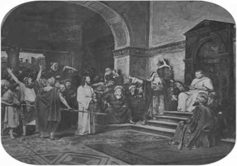Now
Pis for Pilate,
Who, 'gainst his own will, Allowed the proud Jews Sinless Jesus to kill.
QHere is beautiful Queen Esther, who was brought up by her Uncle Mordecai; it was he who told her of the plot that Haman had made, to have the Jews, men, women, and children, killed; she, being a Jewess, risked her life, in order to ask Ahasuerus, the king, a favor. She invited the king and Haman to a party, and there, right before Haman, told the king of the plot. Ahasuerus had Haman hanged on the gallows he had prepared for Mordecai. We surely admire so brave a woman. God's favor and blessing will always go with those who deal righteously, even to the risking of their lives.
ID To restore anything is to bring it back where it was; So all the world will be like the beautiful Garden of Eden and the animals tame and gentle, as when Adam named them. ‘ ‘Adam gave names to all cattle, and to the fowl of the air, and to every beast of the field.”—Genesis 2:20.
How we all love this picture! What a glorious time it will be when all the world will be full of kindness and good deeds; and what lovely rides the children will have on the lions' backs!
Esther 4:11, 5 :1, 2

for Queen Esther, A woman so brave, She risked her own life Her dear people to save.
Acts 3 :21
Isaiah 11:6
Micah 4 :4
means Restitution— Those glad days to come, When in kindness and love All the world will be one.
Q And here we have Stephen, the first Christian martyr, a man full of love and zeal for the Lord, who “did great wonders and miracles among the people”, (Acts 6:8) But he was stoned to death because his hearers did not believe the truth. How many dear saints since then have lost their lives for following the teachings of Jesus! Indeed, many of our own brethren, in this enlightened day, and as recently as 1918, were imprisoned for preaching, “Thou shalt not kill”. Jesus said: “A new commandment I give unto you, That ye love one another, as I have loved you”. (John 13:34) Let us follow Stephen’s example, and die rather than give up the teachings of our Savior.
Thomas, one of our Lord’s disciples, was a skeptic, A that is, a man who will not believe unless he sees.
Though Thomas found it hard to believe, yet when Jesus showed his hands and his side, he said; “My Lord and my God”. Jesus gave him just a gentle rebuke, for he said: “Blessed are they that have not seen, and yet have believed’ ’. (John 20:28, 29) Let us have faith in God’s plan (Ephesians 3:11, Diaglotf) as shown in the Bible; then Jesus will not have to rebuke us.
Acts 7 :54 60
This is for Stephen, The first man who died
i Because he loved J esus— V--' Saul standing beside.
John 20 :2G-29
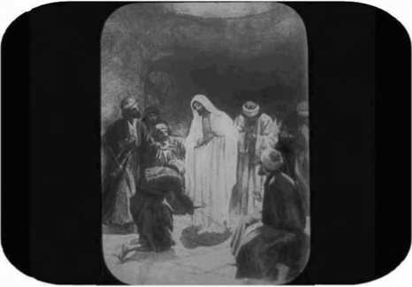And is for Thomas,
Who would not believe That Jesus had risen, ’Till proof he’d receive.
T J Ah! here we have some slight idea of our great God, our glorious Creator, who sits enthroned on high; yet whose ear is open to our prayer. The foundation of his throne is justice. He never changes. God is love. God is light, or wisdom. How we love him when we think of his wonderful character: “the Father of mercies” (2 Corinthians 1:3), so loving and kind, so wise and powerful! Surely we can say with David: “All that is within me, bless his holy name”.—Psalm 103:1.
How true was that old prophecy, for Jesus was buried in the tomb of Joseph of Arimathsea, a very rich man, though all Jesus’ life was spent among the poor, doing them good and preaching the kingdom. Now we have the privilege of telling everyone who will hear of the Golden Age coming, and how Jesus by his death and resurrection and wonderful work buys us all back from sin and the grave; so that if we follow him we may never need to die.
James 1:17

stands for Unchangeable, Always the same;
Who dwells in the light— Jehovah his name.
Isaiah 53 :9 Matthew 27 :57-61
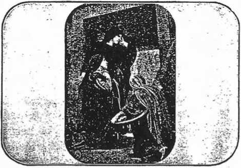And

is for Vault:
As the old Prophet saith, Where Jesus would lie With the rich in his death.
w This poor woman had lost her husband (she was a widow) and now her only son had died. She was heart-broken, and dear Jesus was so sorry for her that he stopped the funeral procession and raised the youth to life. Let our hearts be so tender and full of love that we, like Jesus, will do all we can for those who are in trouble; let us also remember that Jesus worked these wonderful miracles to show what he will do for all who have died, how in the thousand-year day of resurrection, restanding, all those who have been sin-sick and dead in sin will receive life through his death.
'V' If our hearts are given to the Lord, then we will want to set a good example; for the Bible says that “none of us liveth to himself” (Romans 14:7), meaning that everything we do influences someone, and we want to follow Jesus and do good. We have a chance every day to help someone else now, and the glorious Golden Age will be full of such opportunities. Let us always remember that all we do and say is setting a good or a bad example to those around us.
Luke 7
Weymouth
This
for Widow,
Whose son J esus raised: And quite a large crowd God's glory there praised.
stands in eXample, The Lord set his brothers. Let us in our turn Set a good one to others.
vr This young ruler was rich; and though he had kept all the commandments the very best he knew how, yet Jesus said that he lacked one thing: he loved his wealth too much; he could not become humble. Let us always remember what the Bible says: “The love of money is a root of all kinds of evil”. (1 Timothy 6:10, R. V.) The mighty Logos became poor for our sakes, and as the man Jesus he said: “The foxes have holes, and the birds of the air have nests; but the Son of man hath not where to lay his head,"—had no place he could call his own. (Matthew 8:20) We do not need to be rich to serve Jesus, and to be like him.
7 And, last of all, we see, Zacchaeus, a chief publican. He was so small that he had to climb up into a tree to see Jesus as he passed. But Jesus stopped and called him to come down because he was going to stay at his house. Jesus said: “This day is salvation come to this house”. (Luke 19:9) Let us at all times strive for God’s blessing. Let us be just and generous, as Zacchasus was (verse 8). so that salvation may come to our house, and to others through us.
Good-bye, little reader. May God’s richest blessing rest upon you as you grow in favor with God and man.
1 Timothy 6 :10
Luke 12 :15 Luke IS ;18-23
the Young ruler
Who turned away grieving: He loved Jesus less Than wealth, so deceiving.
Luke 19 :l-9, Weymouth
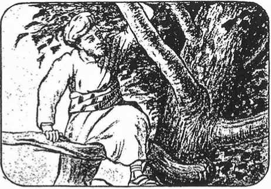And
Zfor Zacchseus: A man almost wee, Who, to see J esus pass Climbed a mulberry tree.